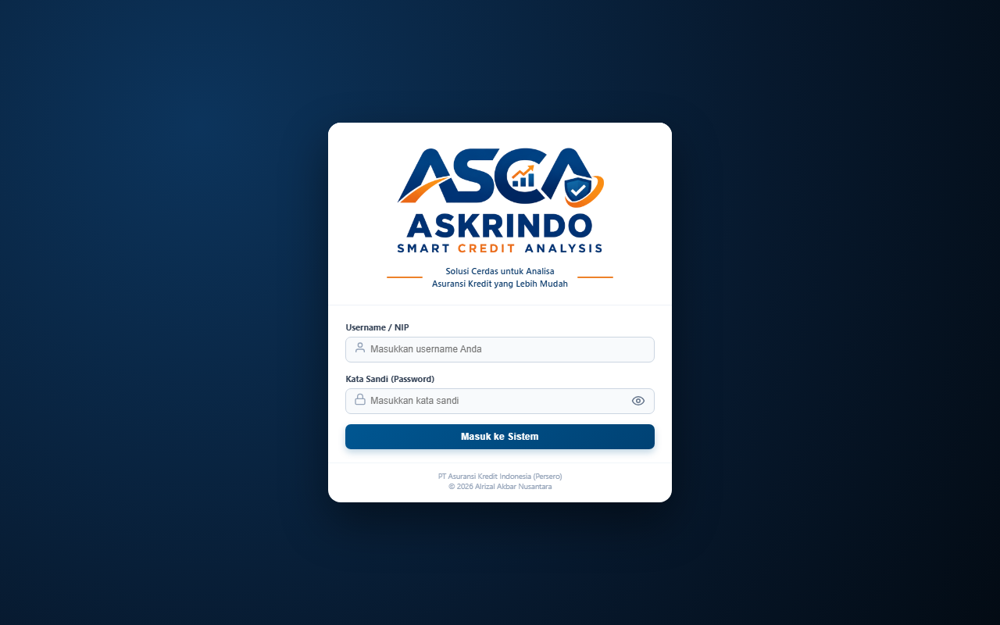
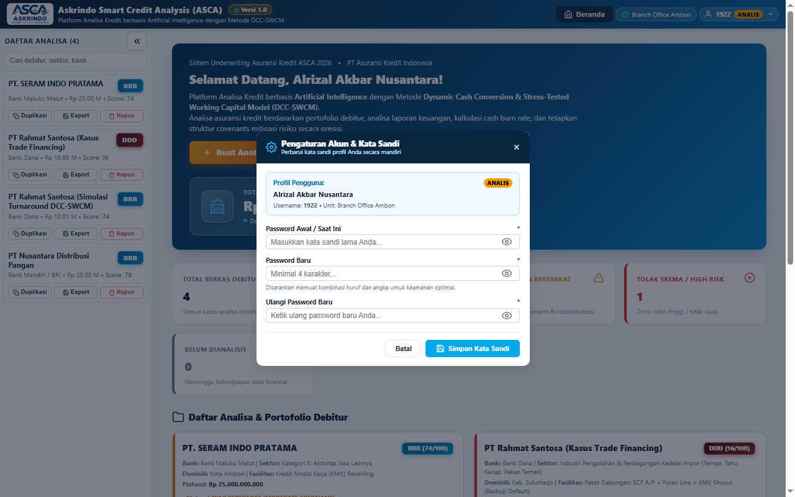
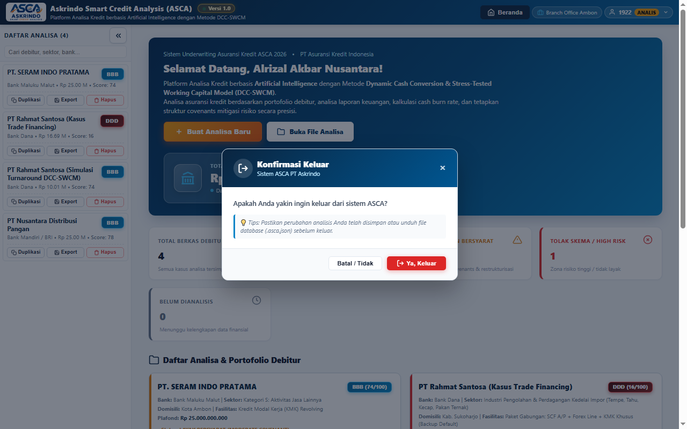
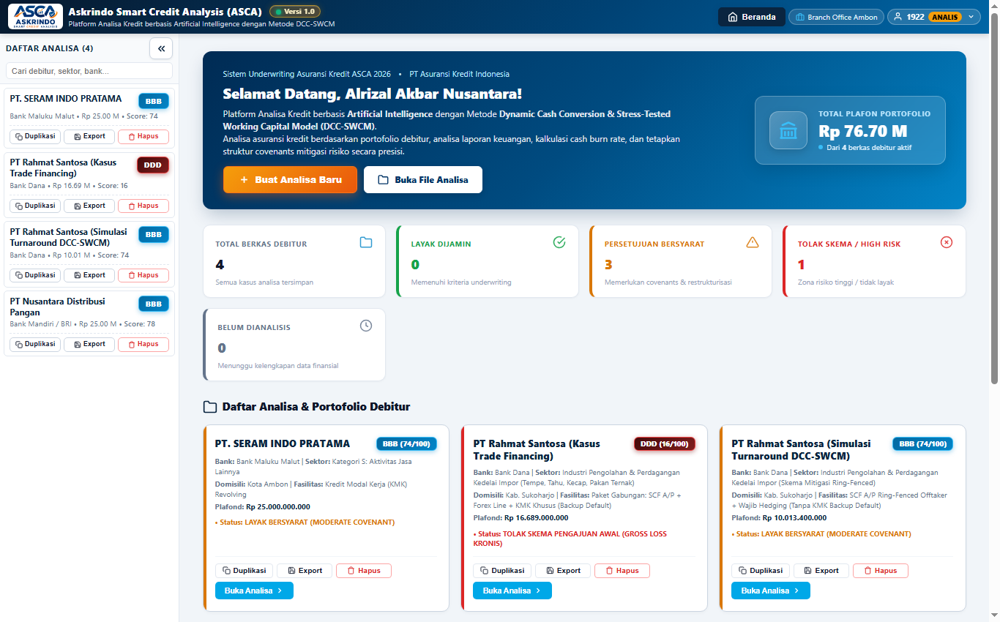
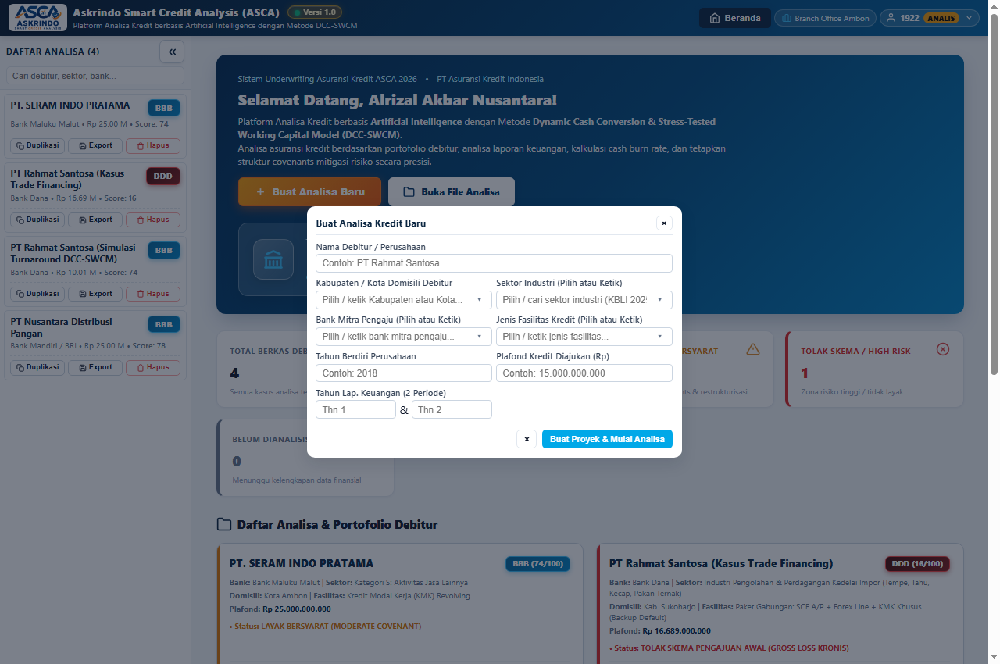
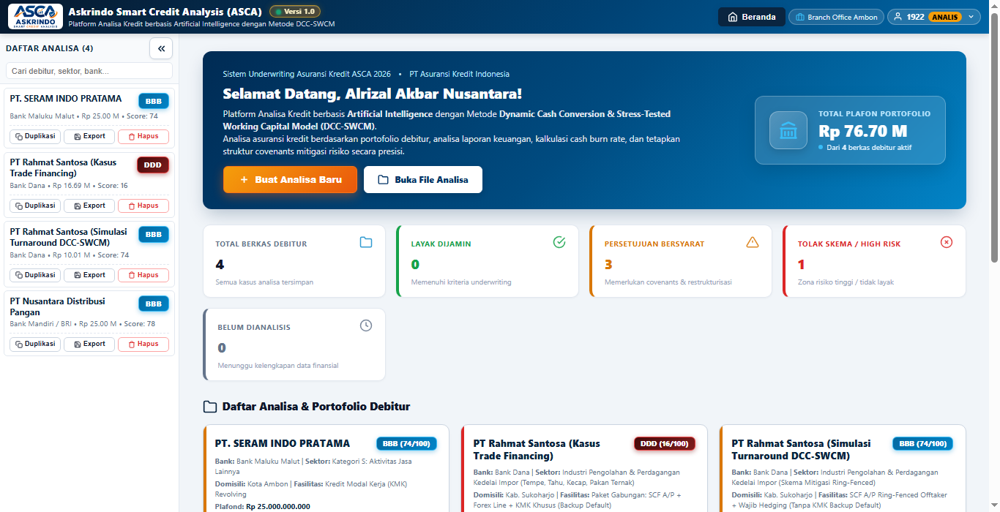
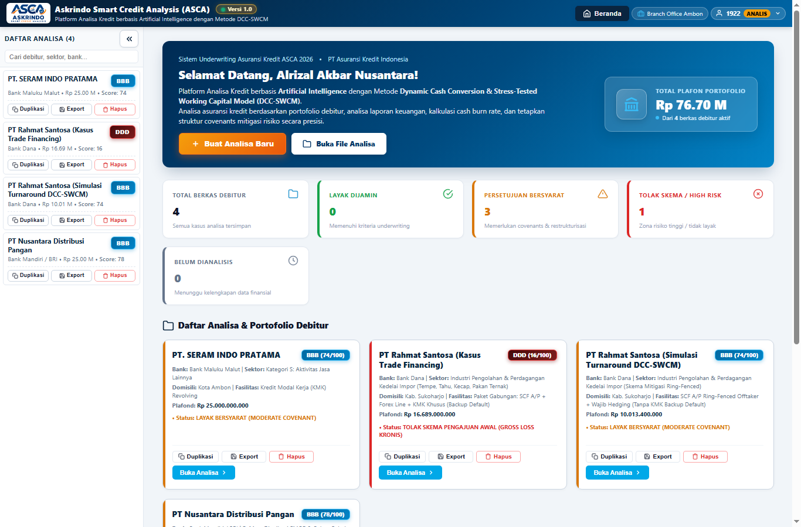
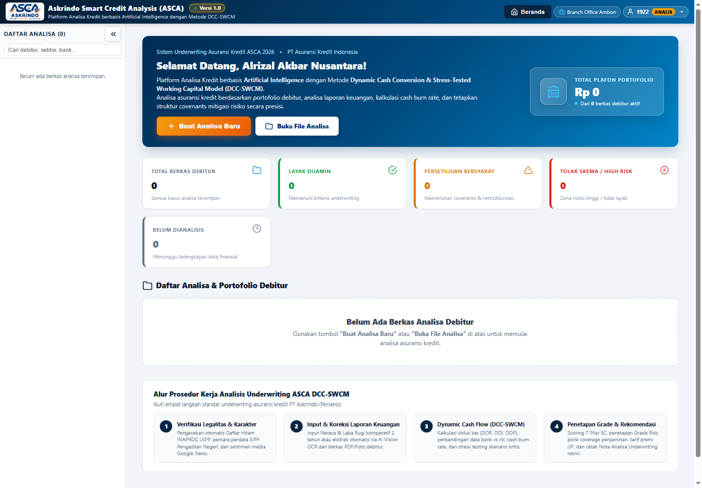
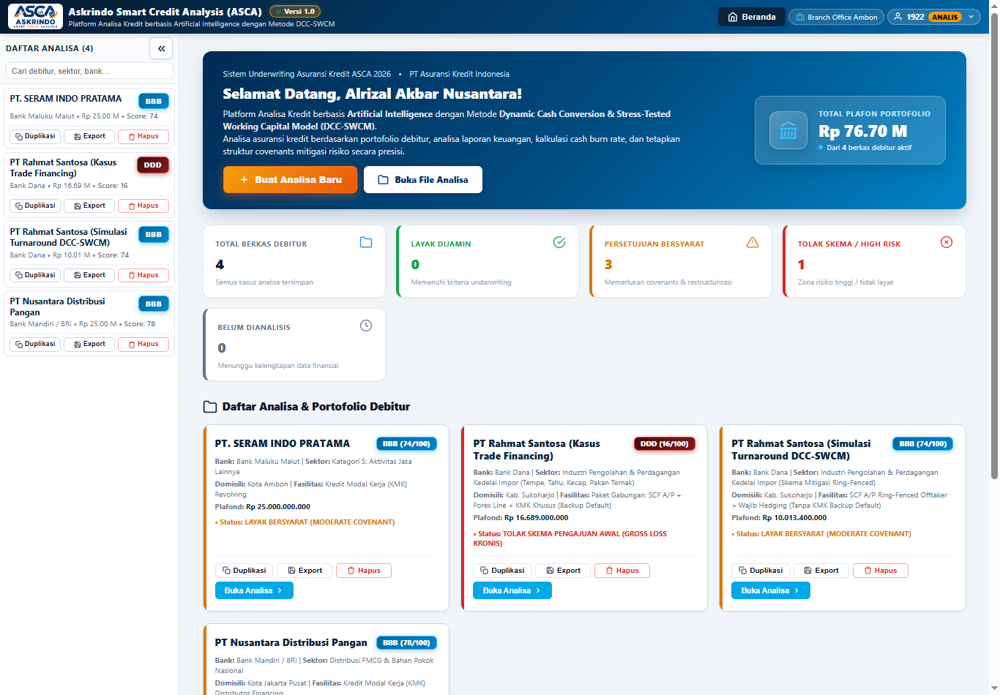
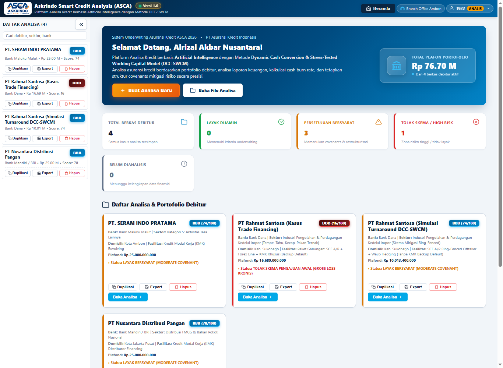

| PT ASURANSI KREDIT INDONESIA Divisi Underwriting Komersial |
USER MANUAL APLIKASIAskrindo Smart Credit Analysis (ASCA) - DCC-SWCM Engine |
No. Dok: ASCA-UM-UW-2026-001
Revisi: 1.0 (Produksi)
Tanggal: 3 November 2026
Klasifikasi: Terbatas (Internal Underwriting)
|
Panduan operasional komprehensif bagi Analis Underwriting (*Maker*), Pejabat Pemeriksa (*Checker*), dan Komite Kredit (*Approver*) dalam mengevaluasi permohonan kredit komersial, simulasi sensitivitas makroekonomi, penetapan rating 10-tier, serta penerbitan nota review akseptasi penjaminan.
User Manual ini disusun sebagai panduan operasional standar (Standard Operating Procedure) bagi pejabat dan staf penjaminan kredit PT Asuransi Kredit Indonesia (Persero) — meliputi Analis Kredit (Underwriter), Pemeriksa (Checker), dan Pemutus / Pimpinan Cabang (Approver) — dalam mengoperasikan sistem aplikasi Askrindo Smart Credit Analysis (ASCA). Sistem ini memfasilitasi analisa kelayakan kredit, penilaian risiko multi-skenario, penentuan porsi penjaminan optimal, serta penyusunan nota review akseptasi berbasis kecerdasan komputasi (AI-assisted).
| Versi | Tanggal | Keterangan / Alasan Perubahan | Penyusun / Penanggung Jawab |
|---|---|---|---|
| 0.1 | 15 Okt 2026 | Perancangan arsitektur sistem analisa kredit DCC-SWCM dan struktur data awal. | Tim Pengembang ASCA |
| 0.5 | 25 Okt 2026 | Integrasi 10 Modul Analisa, simulasi stress-test makroekonomi, dan formula DSCR. | Underwriting AFCA |
| 0.9 | 30 Okt 2026 | Penerapan 10-tier Rating Akseptasi Askrindo (AAA s/d DDD) berbasis Juknis Surety Bond. | Tim Underwriting Komersial |
| 1.0 | 3 Nov 2026 | Rilis Produksi v1.0: Tata kelola sesi enterprise, header analisa adaptif full-width, portal beranda eksekutif, dan modul cetak nota review lengkap. | Alrizal Akbar Nusantara (Branch Office Ambon) |
Platform ASCA mengintegrasikan dua model evaluasi kredit modern:
## 1.1 Akses & Login Sistem
Pengguna mengakses aplikasi ASCA melalui peramban web modern (Google Chrome, Microsoft Edge, Mozilla Firefox) melalui URL resmi: https://askrindo.github.io/asca/.

1922 atau akun analis Anda).| No | Field | Tipe | Sifat | Keterangan |
|---|---|---|---|---|
| 1 | Username / NIP | Alphanumeric | Wajib Diisi | Identitas unik pengguna atau Nomor Induk Pegawai (NIP). |
| 2 | Kata Sandi (Password) | Password | Wajib Diisi | Sandi pengaman akun. Dilengkapi enkripsi sesi lokal. |
| 3 | Tombol Show/Hide Password | Tombol Ikon | Opsional | Mengubah visibilitas teks kata sandi (sensor titik / teks polos). |
| 4 | Tombol Masuk ke Sistem | Tombol Submit | Wajib Diklik | Mengirimkan form dan menginisialisasi sesi kerja pengguna. |
## 1.2 Informasi Sesi & Profil Pengguna
Setelah berhasil masuk, bilah navigasi atas (Top Navigation Bar) akan menampilkan identitas dinamis pengguna yang aktif:
1922), Role Pengguna (Analis), dan panah menu dropdown.## 1.3 Pengaturan Akun & Ganti Kata Sandi
Pengguna dapat memperbarui kata sandi akun secara mandiri melalui menu profil.

| No | Field | Tipe | Keterangan |
|---|---|---|---|
| 1 | User ID | Read-only | Username / NIP pengguna yang sedang login. |
| 2 | Nama Lengkap | Read-only | Nama resmi pemegang akun. |
| 3 | Role / Hak Akses | Read-only | Peran otorisasi (Analyst, Approver, atau Admin). |
| 4 | Password Lama | Input Password | Kata sandi aktif saat ini untuk validasi keamanan. |
| 5 | Password Baru | Input Password | Kata sandi pengganti yang diinginkan. |
| 6 | Konfirmasi Password Baru | Input Password | Harus identik dengan field Password Baru. |
## 1.4 Konfirmasi Keluar (Safety Logout)
Untuk mencegah penutupan sesi yang tidak disengaja saat proses analisa berlangsung, ASCA dilengkapi dialog konfirmasi dua langkah.

## 2.1 Tampilan Beranda Portal (Welcome Hub)
Beranda Portal merupakan pusat kendali eksekutif yang menyajikan ikhtisar seluruh berkas analisa debitur, statistik kelayakan kredit, serta jalan pintas pembuatan kasus baru.

## 2.2 Ringkasan Metrik Akseptasi & Portofolio
Pada bagian tengah portal terdapat kartu metrik portofolio yang dikalkulasi secara realtime:
| No | Kartu Indikator | Warna Aksen | Keterangan & Definisi |
|---|---|---|---|
| 1 | Total Plafon Portofolio | Biru Gradasi | Akumulasi total nilai permohonan plafond penjaminan kredit dari seluruh berkas debitur aktif. |
| 2 | Total Berkas Debitur | Biru Muda | Jumlah total berkas analisa kredit yang tersimpan di dalam memori sistem. |
| 3 | Layak Dijamin | Hijau (Emerald) | Jumlah kasus dengan hasil evaluasi Layak Penuh (Rekomendasi penjaminan standar s/d 80%-90%). |
| 4 | Persetujuan Bersyarat | Oranye (Amber) | Jumlah kasus dengan status Conditional Approval (memerlukan Cash Collateral, restrukturisasi skema, atau porsi penjaminan maksimum 55%-70%). |
| 5 | Tolak Skema / High Risk | Merah (Crimson) | Jumlah kasus yang tidak layak dijamin (Uninsurable / Reject) akibat masalah likuiditas parah, gross loss, atau rasio DSCR kritis. |
| 6 | Belum Dianalisis | Abu-abu | Kasus baru yang belum diinput data laporan keuangannya (Zero Financials). |
## 2.3 Tombol Aksi Cepat (Quick Actions)
+ Buat Analisa Baru (Warna Oranye Kontras Tinggi): Membuka modal pendaftaran proyek debitur baru.Buka File Analisa (Putih Bersih): Membuka file explorer lokal komputer untuk mengimpor file cadangan database (.asca.json).Beranda pada Header: Mengembalikan tampilan layar ke portal ini kapan saja saat berada di dalam lembar kerja analisa kasus.## 3.1 Pencarian Debitur & Filter Cerdas
Sidebar sebelah kiri memuat seluruh arsip debitur yang tersimpan. Pengguna dapat mencari berkas secara instan menggunakan kolom pencarian di bagian atas sidebar.
×): Menghapus kata kunci pencarian seketika untuk menampilkan kembali seluruh daftar debitur.## 3.2 Tampilan Sidebar (Expand / Collapse)
«) di sudut kanan atas header sidebar.») pada bilah ramping tersebut untuk membuka kembali daftar lengkap analisa debitur.## 3.3 Aksi Duplikasi, Ekspor Kasus Tunggal, & Hapus
Setiap kartu debitur pada sidebar dilengkapi 3 tombol aksi mikro:
(Salinan). Fitur ini sangat berguna untuk melakukan simulasi skenario alternatif tanpa mengubah berkas asli.[Nama_Debitur].json).Pada bagian footer sidebar terdapat indikator status penyimpanan otomatis:
✓ Tersimpan otomatis (Database Cloud Aktif)
Setiap kali pengguna melakukan perubahan angka atau teks pada form, ASCA secara otomatis menyimpan perubahan ke Local Storage dan mengunggahnya ke repositori Cloud Storage tanpa perlu menekan tombol simpan berulang-ulang.
Untuk menganalisa debitur yang baru mengajukan permohonan penjaminan kredit, pengguna membuka form pembuatan proyek baru.

+ Buat Analisa Baru pada Beranda Portal atau ikon tambah pada sidebar.| No | Field | Tipe Kontrol | Keterangan / Pilihan |
|---|---|---|---|
| 1 | Nama Perusahaan / Debitur | Text Input | Nama resmi badan usaha calon terjamin (PT / CV / Koperasi). |
| 2 | Nama Bank Penyalur Kredit | Combobox / Text | Bank mitra penyalur kredit (contoh: Bank Mandiri, BRI, BNI, Bank Dana, Bank Maluku Malut). |
| 3 | Jenis Fasilitas Kredit | Dropdown Menu | Pilihan fasilitas: KMK Revolving, KMK Transaksional, SCF AP, Forex Line, atau Paket Gabungan. |
| 4 | Sektor Usaha / Industri | Dropdown Menu | Klasifikasi lapangan usaha sesuai KBLI / Sektor Askrindo (Perdagangan, Manufaktur, Konstruksi, Jasa, dll.). |
| 5 | Kota / Domisili Usaha | Text Input | Kota atau Kabupaten lokasi kantor pusat / operasional debitur. |
| 6 | Plafond Kredit yang Dimohonkan | Numeric (Rupiah) | Nilai nominal permohonan kredit dalam satuan Rupiah (contoh: Rp 16.689.000.000). |
| 7 | Tahun Laporan Keuangan 1 (Historis) | Numeric (Tahun) | Tahun buku keuangan awal yang akan diinput (contoh: 2022). |
| 8 | Tahun Laporan Keuangan 2 (Terbaru) | Numeric (Tahun) | Tahun buku keuangan pembanding/terbaru (contoh: 2023). |
## 4.3 Ketentuan Inisialisasi Modul (Empty-State Guard)
## 5.1 Informasi Utama & Micro-Chips Metadata
Header Analisa (.case-banner) dirancang dengan struktur 2-Tier adaptif yang responsif pada semua ukuran resolusi layar:

#f8fafc dengan garis halus #e2e8f0 yang memuat metadata penting:BANK: Nama bank kreditor.SEKTOR: Bidang usaha (teks panjang dilengkapi pemotongan ellipsis dan tooltip title saat disentuh kursor).DOMISILI: Kota kedudukan debitur.PLAFOND: Plafon pengajuan kredit terformat Rupiah.LAP. KEU: Dua tahun buku keuangan yang dievaluasi.UNDERWRITER: Nama analis pembuat berkas.UNIT / DIVISI: Cabang penjaminan Askrindo terkait.## 5.2 Lingkaran Skor DCC-SWCM & Tautan Navigasi Cepat
score-circle): Menampilkan skor komposit skala 0 s/d 100 dengan warna yang berubah otomatis sesuai grade risiko (Merah: High Risk/DDD, Oranye: Moderate/BB, Hijau: Prime/AAA). Klik lingkaran ini untuk langsung melompat ke lembar Rincian Skor.Analisa 5C: Melompat ke grafik radar evaluasi 5C.Rincian Skor: Melompat ke tabel perhitungan bobot penilaian.Indikator Grade: Melompat ke matriks grade rating akseptasi.## 5.3 Keputusan Cepat & Rekomendasi Coverage
TOLAK SKEMA PENGAJUAN AWAL (GROSS LOSS KRONIS) atau PERSETUJUAN BERSYARAT DENGAN RESTRUKTURISASI).Tombol [ 💾 Simpan ] terletak kokoh di ujung kanan Tier 2 (align-self: stretch). Menekan tombol ini akan mengompilasi seluruh tab dan menyimpannya secara permanen ke pangkalan data cloud.
Workspace ASCA terbagi ke dalam 10 Tab Analisa komprehensif yang saling terhubung secara terpadu.
## 6.1 Tab 1: Dashboard Debitur & Radar 5C
Menyajikan rangkuman eksekutif visual yang ideal untuk presentasi komite kredit dan review manajemen.
## 6.2 Tab 2: Input Parameter & Laporan Keuangan
Merupakan fondasi utama kalkulasi sistem. Analis menginputkan data finansial debitur selama dua periode tahun buku terakhir.
| No | Bagian Laporan | Field / Akun Finansial | Fungsi dalam Perhitungan DCC-SWCM |
|---|---|---|---|
| 1 | Profil & Fasilitas | Limit SCF, Limit Forex, Suku Bunga (%) | Menghitung beban bunga tahunan dan batas likuiditas penjaminan. |
| 2 | Neraca - Aset Lancar | Kas & Setara Kas | Komponen utama likuiditas primer dan ketahanan Cash Burn Rate. |
| 3 | Piutang Usaha | Menghitung Days Sales Outstanding (DSO) dan perputaran piutang. | |
| 4 | Persediaan Barang (Inventory) | Menghitung Days Inventory Outstanding (DIO) dan kebutuhan modal kerja. | |
| 5 | Aset Lancar Lainnya | Menghitung total aktiva lancar dan rasio Current Ratio. | |
| 6 | Neraca - Kewajiban Lancar | Hutang Usaha (Trade Payables) | Menghitung Days Payable Outstanding (DPO) dan siklus pembiayaan supplier. |
| 7 | Hutang Bank Jangka Pendek | Komponen kewajiban lancar yang jatuh tempo dalam 12 bulan. | |
| 8 | Kewajiban Lancar Lainnya | Menghitung total Current Liabilities untuk penentuan NWC. | |
| 9 | Neraca - Solvabilitas | Total Hutang & Total Ekuitas | Menghitung rasio solvabilitas Debt to Equity Ratio (DER) dan Debt to Asset. |
| 10 | Laba Rugi | Penjualan / Pendapatan Usaha | Menghitung pertumbuhan omzet (Sales Growth) dan basis rasio efisiensi. |
| 11 | Harga Pokok Penjualan (HPP) | Menghitung Gross Profit Margin (GPM) dan rasio perputaran persediaan. | |
| 12 | Beban Operasional / Umum | Menghitung Cash Burn Rate bulanan dan laba operasional (EBITDA). | |
| 13 | Laba Bersih (Net Profit) | Menghitung Net Profit Margin (NPM), ROA, dan ROE. |
Modul ini mengkalkulasi efisiensi arus siklus kas operasional debitur dari saat pembelian bahan baku hingga penerimaan pelunasan tagihan.
| Parameter | Formula Komputasi | Interpretasi Underwriting |
|---|---|---|
| Days Sales Outstanding (DSO) | $\text{DSO} = \frac{\text{Piutang Usaha}}{\text{Penjualan Tahunan}} \times 365$ | Rata-rata hari yang dibutuhkan debitur untuk menagih piutang dari pembeli. |
| Days Inventory Outstanding (DIO) | $\text{DIO} = \frac{\text{Persediaan}}{\text{HPP Tahunan}} \times 365$ | Rata-rata hari lamanya barang mengendap di gudang sebelum berhasil terjual. |
| Days Payable Outstanding (DPO) | $\text{DPO} = \frac{\text{Hutang Usaha}}{\text{HPP Tahunan}} \times 365$ | Rata-rata tempo pembayaran yang diperoleh debitur dari pemasok/supplier. |
| DCC Net Cycle (Hari) | $\text{DCC} = \text{DSO} + \text{DIO} - \text{DPO}$ | Kesenjangan waktu (cash gap) di mana debitur membutuhkan talangan modal kerja. Siklus yang memanjang mengindikasikan risiko likuiditas tinggi. |
## 6.4 Tab 4: Stress-Testing & Shock Sensitivitas
Menguji ketahanan kinerja debitur apabila terjadi kondisi makroekonomi dan operasional yang memburuk secara drastis.
## 6.5 Tab 5: Net Working Capital (NWC) & CBRT
Menghitung ketersediaan modal kerja riil dan berapa lama kas debitur mampu bertahan hidup (survival runway).
| Metrik | Formula | Standar Ambang Batas |
|---|---|---|
| Net Working Capital (NWC) | $\text{NWC} = \text{Aset Lancar} - \text{Kewajiban Lancar}$ | Harus bernilai positif ($> 0$). Jika negatif, debitur berisiko gagal bayar jangka pendek. |
| Monthly Cash Burn Rate (CBR) | $\text{CBR} = \frac{\text{Beban Operasional Tahunan} + \text{Beban Bunga}}{12}$ | Kebutuhan kas bulanan untuk membiayai operasional tetap debitur. |
| Cash Burn Rate Time (CBRT) | $\text{CBRT} = \frac{\text{Kas \& Setara Kas}}{\text{Monthly CBR}}$ | Waktu bertahan kas (dalam bulan). Minimum sehat adalah $\ge 3$ bulan. |
## 6.6 Tab 6: Proyeksi Cash Flow & Debt Service (DSCR)
Memproyeksikan arus kas bulanan selama 12 bulan ke depan untuk menguji kemampuan membayar angsuran pokok dan bunga bank (Debt Service).
$$\text{DSCR} = \frac{\text{Cash Flow Available for Debt Service (CFADS)}}{\text{Angsuran Pokok Pinjaman} + \text{Beban Bunga Pinjaman}}$$
## 6.7 Tab 7: Grade Risk & Indikator Penyebab (10-Tier Rating)
Menetapkan peringkat rating akseptasi resmi Askrindo berdasarkan tabel standardisasi industri penjaminan kredit.

(Mengacu pada Tabel VI.1 Petunjuk Teknis Suretyship Askrindo / Standar PT IDX Consulting)
| Rating Grade | Rentang Skor | Kategori Risiko | Rekomendasi Akseptasi Askrindo | Porsi Coverage Maks. |
|---|---|---|---|---|
| AAA | $91 - 100$ | Risiko Sangat Rendah | Disetujui Penuh (Tanpa Syarat Khusus) | $90\%$ |
| AA | $81 - 90$ | Risiko Rendah | Disetujui Penuh (Fasilitas Standar) | $85\%$ |
| A | $71 - 80$ | Risiko Terkendali Baik | Disetujui Penuh | $80\%$ |
| BBB | $61 - 70$ | Risiko Sedang (Investment Grade) | Disetujui dengan Pemantauan Berkala | $75\%$ |
| BB | $51 - 60$ | Risiko Cukup Tinggi | Persetujuan Bersyarat (Covenants Ketat) | $70\%$ |
| B | $41 - 50$ | Risiko Tinggi | Persetujuan Bersyarat (Cash Collateral) | $60\%$ |
| CCC | $31 - 40$ | Risiko Sangat Rentan | Pembatasan Ketat (Escrow Account) | $55\%$ |
| CC | $21 - 30$ | Risiko Sangat Tinggi / Defisit | Tolak Skema Awal (Restrukturisasi Wajib) | $50\%$ |
| C | $11 - 20$ | Kerugian Kronis / Insolvensi | Tolak Akseptasi Penjaminan | Opsi Maks $55\%$ |
| DDD | $0 - 10$ | Default / Uninsurable | Tolak Mutlak (Uninsurable) | $0\%$ |
Menyajikan pembobotan matematis transparan dari prinsip analisa kredit 5C Askrindo.

| Pilar 5C | Bobot | Parameter Evaluasi Utama |
|---|---|---|
| Character (Watak) | $15\%$ | Riwayat kolektibilitas BI Checking / SLIK OJK, integritas manajemen, blacklist INAPROC. |
| Capacity (Kapasitas) | $30\%$ | Siklus DCC, rasio DSCR, pertumbuhan omzet, perputaran piutang & persediaan. |
| Capital (Permodalan) | $25\%$ | Modal Kerja Bersih (NWC), Debt-to-Equity Ratio (DER), profitabilitas (GPM & NPM). |
| Collateral (Agunan) | $15\%$ | Nilai taksasi agunan fixed assets, pengikatan hak tanggungan, agunan likuid (Cash/Deposito). |
| Condition (Kondisi Makro) | $15\%$ | Ketahanan terhadap shock valas, ketergantungan impor, prospek industri debitur. |
## 6.9 Tab 9: Rekomendasi Struktur Fasilitas & Mitigasi Risiko
Memberikan panduan klausul syarat persetujuan (covenants) dan restrukturisasi fasilitas kredit bagi bank mitra penjaminan.

## 6.10 Tab 10: Review Analisa & Lembar Keputusan Underwriting
Dokumen resmi akhir yang merangkum keseluruhan analisa kredit, pertimbangan underwriter, dan jalur tanda tangan berjenjang (Maker - Checker - Approver).

| No | Bagian Form | Isian Data | Pejabat Penanggung Jawab |
|---|---|---|---|
| 1 | Opini Analis Kredit | Catatan evaluasi, pertimbangan risiko utama, dan rekomendasi struktural. | Analis Kredit / Underwriter |
| 2 | Tanda Tangan Maker | Nama Analis, NIP, Jabatan (Underwriter Ahli Pertama), Tanggal. | Pembuat Berkas (Maker) |
| 3 | Tanda Tangan Checker | Nama Pemeriksa, NIP, Jabatan (Kasi Underwriting Komersial), Tanggal. | Pemeriksa Berkas (Checker) |
| 4 | Tanda Tangan Approver | Nama Pejabat Pemutus, NIP, Jabatan (Pemimpin Cabang / Kadiv), Tanggal. | Pejabat Pemutus (Approver) |
| 5 | Tombol Cetak PDF | Mencetak nota review ke format dokumen resmi PDF siap bubuh tanda tangan basah / digital. | Seluruh Pejabat Berwenang |
ASCA_Workspace_Backup_[Tanggal].json
## 7.2 Impor & Pemulihan Berkas Cadangan
.json. Sistem ASCA akan secara otomatis memulihkan seluruh arsip debitur, neraca, dan hasil kalkulasi tanpa ada data yang hilang.[ 🖨️ Cetak / Ekspor PDF ] di bagian atas lembar nota review..case-banner) ............................................................. 15